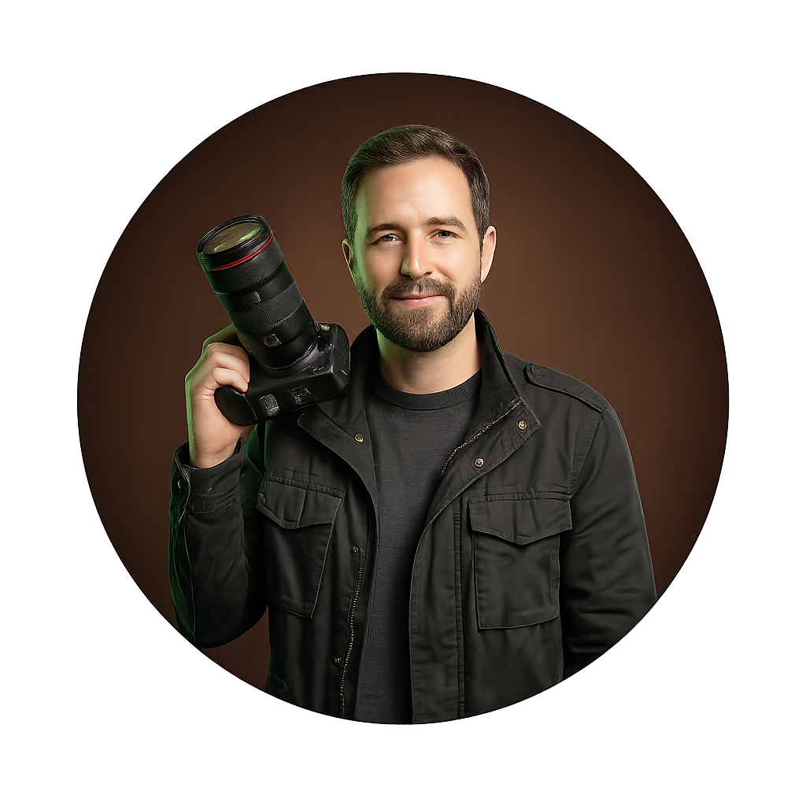

Sobre mí
Soy un fotógrafo freelancer apasionado por capturar momentos únicos y contar historias a través de mis imágenes. Con más de 10 años de experiencia en el campo de la fotografía, he trabajado en una amplia variedad de proyectos, desde eventos sociales hasta sesiones de retrato y fotografía comercial.
Mi enfoque se basa en la creatividad, la atención al detalle y la satisfacción del cliente. Me esfuerzo por entender las necesidades de cada proyecto y ofrecer resultados que superen las expectativas. Mi objetivo es crear imágenes que no solo sean visualmente atractivas, sino que también transmitan emociones y cuenten historias.
Además de mi experiencia en fotografía, también tengo habilidades en edición de imágenes y video, lo que me permite ofrecer un servicio completo a mis clientes. Estoy siempre abierto a nuevos desafíos y oportunidades para seguir creciendo como fotógrafo y brindar un trabajo de alta calidad.